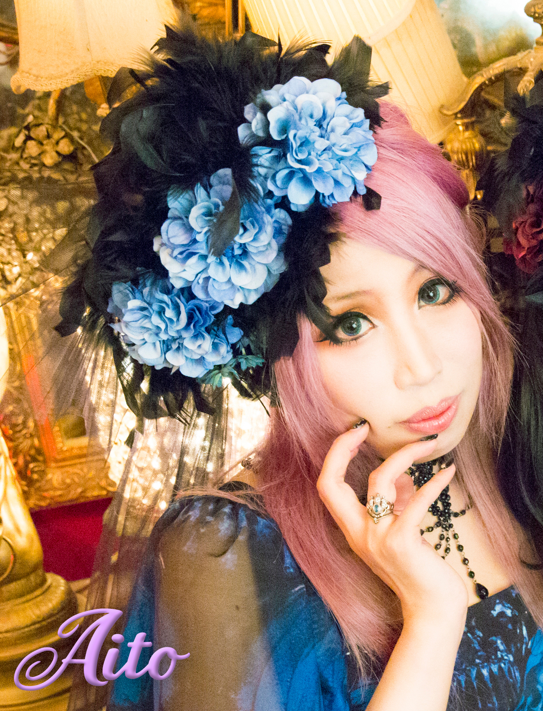
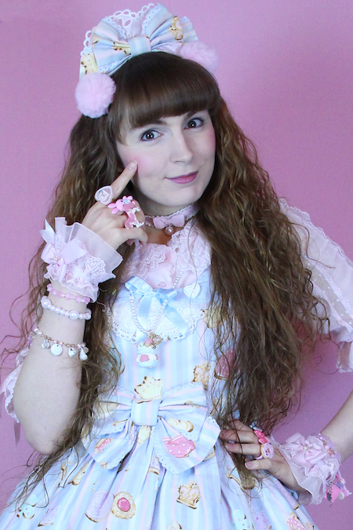
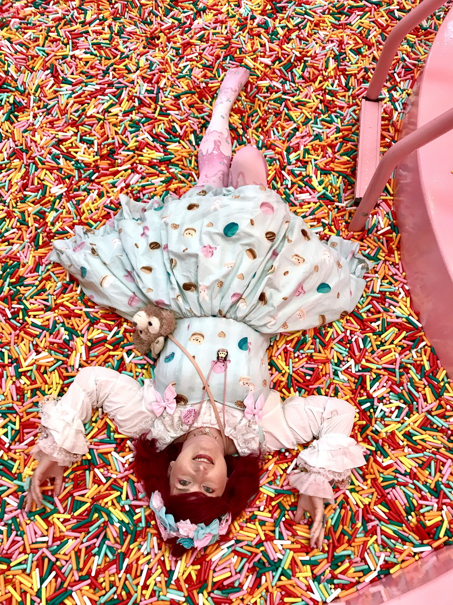

RVR Special Guests
Royal Princess Alice and Bio-Politics

We couldn't be happier to welcome Japanese special guest Aito, owner of Royal Princess Alice and Bio-Politics!
In their own words:
【RoyalPrincessAlice】
ヨーロッパのPrincess のように気品高く
Aliceの世界のように不思議でキュートでダーク...
そんな世界観をコンセプトにしたゴシック＆ロリータブランドです。
更に、和テイストを取り入れたロリータスタイル『和ロリ』も加わりました。
Noble like European Princess
Mysterious, cute and dark like the world of Alice ...
It is a Gothic & Lolita brand with the concept of such a world view.
In addition, Lolita style "Wa Lori" incorporating Japanese taste has also been added.
【bio ・politics】
性別や年齢に捕われない、自由な表現をテーマにした大人Rock
Adult Rock with the theme of free expression, regardless of gender or age
Find their online shops at https://royalprincessalice.net and https://biopolitics.thebase.in
Lovely Lor and Holly Flynn

Pretty Princess Club is thrilled to announce Lovely Lor and Holly Flynn as special guests at Royal Vegas Retreat!
In their own words:
Lovely Lor is a lolita fashion YouTuber, and creator of Shit Lolitas Say, Lolita Reacts, Lolita Horror Stories and more! She’s an active member of multiple International Lolita Fashion Communities and has been interested in lolita and kawaii fashion for over 10 years. Lovely Lor has been featured in documentaries about lolita fashion such as Sugar Coated and Weird Threads. She creates videos on her youtube channel specializing in alternative fashions, positivity, and adventure!
Holly is Lovely Lor’s partner who’s recently started wearing lolita! She appears regularly on Lovely Lor’s channel and assists with creating videos! Despite being a new lolita, she is fully committed to the fashion and is active with many online and local communities. Holly generally represents gothic lolita in this duo but also enjoys putting her own unique take on lolita.
Follow Lor and Holly's adventures on Youtube, as well as Lor's Instagram, Facebook, and Twitter, as well as Holly's Instagram and Twitter.
Tyler Willis (Scarfing Scarves)
Pretty Princess Club is incredibly stoked to announce Tyler Willis, a.k.a. Scarfing Scarves as a special guest at Royal Vegas Retreat!
In her own words:
Tyler Willis is the creator behind Last Week Lolita News, a lolita fashion news show made specifically for people who would take out your left eye with a parasol if they thought it would get them even an inch closer to getting their dream dress. She discusses the happenings of the week in lolita, dissects the general bickering into satisfying soundbites, and generally works as a giant envoy of catharsis for the lolita community at large.
You can follow Tyler on YouTube, Facebook, and Instagram.
Puvithel

Puvithel is an alternative fashion designer based in Pittsburgh, USA who has been making and designing original handmade jewelry, accessories, clothing and handbags for J-fashion and alternative styles since 2015.
Puvithel is about unabashed self-expression and spans many styles, including punk, gothic, lolita, and menhera. Regardless of style, Puvithel's items are loud – inspired by the in-your-face aesthetic of American gothic fashion. Puvithel believes that fashion is a beneficial form of expression, a belief that is imbued in every item she makes. Every series has its own style and narrative to aid you in telling your own story.
You can follow Puvithel on Instagram and Facebook. You can also browse her website at http://www.puvithel.com and Etsy.
Kuroshiro Kawaii

Royal Vegas Retreat is thrilled to announce Texas-based J-fashion resellers, Kuroshiro Kawaii!
In their own words:
Kuroshiro Kawaii is a brand that wants to ensure that the entire community in the Houston, TX area has access to quality Japanese fashion. They pride themselves on having real connections to brand owners and designers, including Japanese, indie, and self-care brands.
Kuroshiro Kawaii is a name with multiple facets. When they were deciding on a name, they wanted one that would reflect the duality of the fashions they offer while at the same time being recognizable and inviting to the typical American in the area.
The “kuro” in their name stands for punk, gothic, and visual fashion; while “shiro” stands for elegant, princely, and sweet lolita and ouji fashions. It also reflects another duality that is important to the attitude of their shop: good and evil, angel and devil, order and chaos. The words “kuro” and “shiro,” and their associated meaning in kanji, really pin down what they wanted for the look and feel of their shop and the brands they want to carry.
“Kawaii” is a word commonly known and familiar to most Americans, and reflects a large portion of the styles they will carry: kawaii and Harajuku styles.
You can buy from Kuroshiro Kawaii on their webshop: https://kskawaii.com/. You can also follow them on Facebook (https://www.facebook.com/kuroshirokawaii/), Instagram (https://www.instagram.com/kskawaiishop/), and Twitter (https://twitter.com/KSKawaiiShop).
Fluffy Kawaii Jo
Royal Vegas Retreat is excited to announce Swiss Youtuber and brand owner Fluffy Kawaii Jo!
In her own words:
“Everybody Can Be Kawaii” – no matter what age, gender, color or body type you are, you deserve to feel kawaii as fluff and good about yourself. Fluffy Kawaii Jo lives in Switzerland and her mission is to help you feel fantastic wearing the stuff that makes you happy. She makes videos about lolita fashion and Kawaii culture in general, from practical lifehacks for people new to the fashion, product reviews, event reports and interviews with people from the scene. She also makes entertaining and funny videos like her "Action Lolita" series, proving that not only can everybody be kawaii, but you can be kawaii anywhere, doing anything as well.
You can find her on YouTube (http://www.youtube.com/fluffykawaiijo), Firework (http://fireworktv.onelink.me/iKBL/fluffykawaiiJo, Instagram (http://www.instagram.com/fluffykawaiijo), Facebook (http://www.facebook.com/fluffykawaiijo), and Patreon (http://www.patreon.com/fluffykawaiijo).
GHOST GiRL GOODS

Royal Vegas Retreat is hella stoked to announce Canadian kawaii brand GHOST GiRL GOODS!
In their own words:
GHOST GiRL GOODS is a clothing brand, fusing cool hip-hop looks and cute pop style into one. Our goals are to remove labels and embrace differences, encouraging confidence in all hearts! GHOST GiRL uses her love of music, dance, and Japanese street fashion as inspiration for each piece. She has worked with Sebastian Masuda, creator of 6%DOKIDOKI, on the NEW GENERATION KAWAII Tour held in Toronto, August of 2019 and most recently represented Canada at BuriDeco/World Lolita 2020 in Japan, hosted by Triple*Fortune. GHOST GiRL looks forward to meeting you at Royal Vegas Retreat! BE STRANGE. FEAR THE NORM.
You can find GHOST GiRL GOODS at https://www.ghostgirlgoods.com/ as well as on Facebook (https://www.facebook.com/ghostgirlgoods), Instagram (https://www.instagram.com/ghostgirlgoods/), YouTube (https://www.youtube.com/c/theofficialghostgirlchannel), and Twitter (https://twitter.com/ghostgirlgoods).
We are working with the brightest talent, and we're truly excited about all of our special guests. Watch our Facebook page and sign up for our Substack newsletter for the latest announcements.